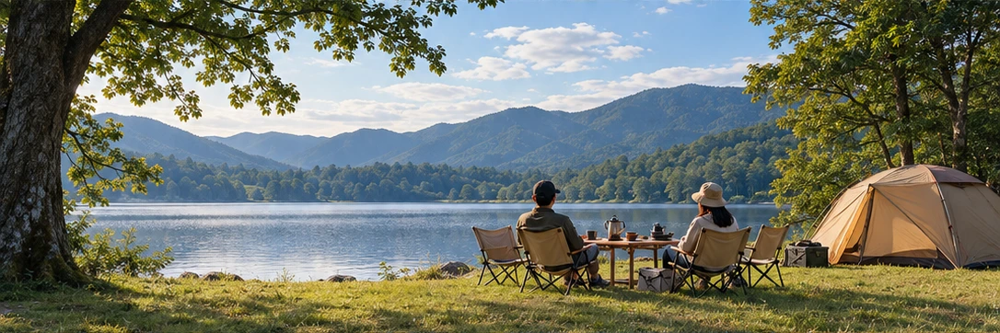

SOTOJITAKU CAMP / BEGINNER GUIDE
必要なものは、
キャンプごとに違う。
「初心者セット」を丸ごと買うより、泊まる・食べる・過ごすの順に不足を確認します。
キャンプの持ち物一覧は長くなりがちですが、すべてが同じ重要度ではありません。宿泊するなら雨風をしのぐ場所、眠るための寝袋とマット、夜の明かりが土台。料理や焚き火は、やりたい場合に追加します。まず必須と体験用を分けるだけで、準備の優先順位が見えます。
01 宿泊の基本を先にそろえる
1泊するなら、テントなどのシェルター、寝袋、地面からの冷えや凹凸を和らげるマット、夜間の明かりが基本です。寝袋だけあっても、地面からの冷えや硬さで眠りにくいことがあります。寝る環境はセットで考えます。
日帰りなら、宿泊装備を無理に持っていく必要はありません。まず日帰りで設営・外ごはん・撤収を体験してから1泊へ進む方法もあります。
02 食事は献立から逆算する
料理道具を先に買うより、作るものを決めて必要な器具を出す方が無駄が減ります。火を使う料理なら対応するバーナーや燃料、要冷蔵の食材ならクーラーボックスと保冷剤が必要です。料理しない選択なら、その分だけ荷物を減らせます。
生肉などは十分な保冷と加熱、手洗い・器具の分離など衛生面も確認してください。
03 チェアやテーブルは快適さとの交換
座る・食べる時間を快適にする道具は重要ですが、サイズと重量が増えやすい分野でもあります。車移動なら快適性を取りやすく、徒歩や公共交通なら軽さを優先するなど、移動手段によって選び方が変わります。
持っているレジャー用品で代用できるものもあります。初回から専用品ですべて統一する必要はありません。
出発前のチェック
- 宿泊ならテント等のシェルター
- 宿泊なら寝袋
- 宿泊ならマット
- 夜を過ごすならLEDランタン
- 座るなら人数分のチェア
- 食事をするなら必要に応じてテーブル
- 料理に合う加熱器具・燃料
- 要冷蔵食材の保冷
- 焚き火なら安全用品
“持っている”を最初に引く家にある道具やすでに持っているキャンプ用品を先に除外すると、買うものが減ります。SOTOJITAKUでは持っている・買う・借りる・次回にするを分けて計画できます。
次に読む
MAKE YOUR CAMP
条件を選ぶと、必要なものが変わります。
7つの質問から、持ち物・買う/借りる・ごはん・予算・1日の流れまで、あなたのキャンプとして組み立てます。
SOTOJITAKU CAMPでつくる →